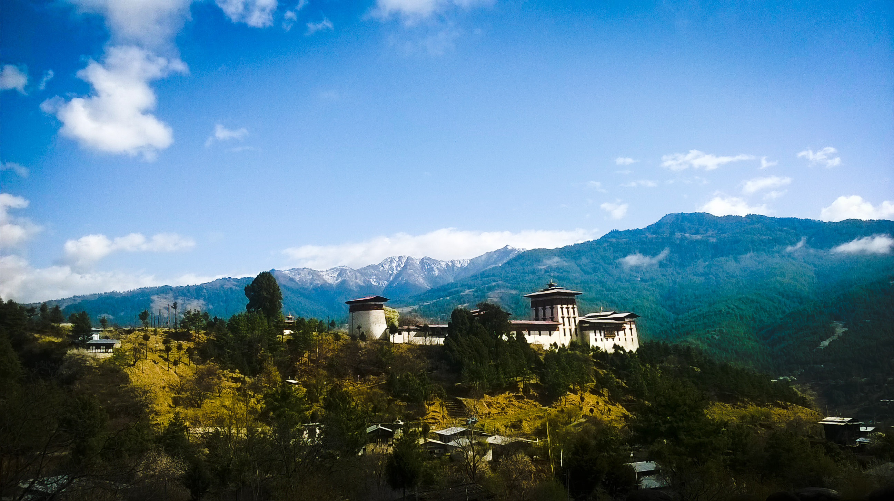

Cultural Tour
Unique Divine Travels, in the effort to uphold selfless quality service, offers best cultural destinations embedded in central, eastern and western regions of Bhutan with a special focus on Tshechu (performing arts or festival), temples, monastery, fortress, culinary heritage, handicrafts, and socio-cultural integrity.
Season: March - May & September - December
Day 1: Arrive in Paro
- Reception at the airport by our guide and driver;
- Visit Ta Dzong (watch tower) which has been currently transformed into a fascinating museum that showcases Bhutanese rich art and artifacts; and
- Night halt in hotel.
Day 2: Local tour in Paro valley
- Drive in the morning and walk to Taksthang monastery (Tiger Nest);
- Visit Kichu Lhakhang (temple) that dates back to 7th century; and
- Night halt in hotel.
Day 3: Fly to Bumthang
- Visit Jampa Lhakhang (temple) dates back to 7th century, Tamshing monastery, Kurjey Lhakhang (temple popular for body imprint of Guru Rimpoche in the cave);
- Explore Chamkhar town; and
- Night halt in hotel.
Day 4: Village tour in Bumthang
- Visit Kharchu monastery that houses more than 400 monks;
- Visit Mebar Tsho (Burning Lake) where a saint called Tertoen (Treasure discoverer) Pema Lingpa unearthed sacred treasure from in 14th century;
- Village-walk in Ura, visit temple and School;
- Drive back to Tangsibi village and visit local temple; and
- Night halt in home stay (Cultural dance (if preferred) will be arranged in the night).

Jakar Dzong, Bumthang
Day 5: Bumthang to Phobjikha via Trongsa
- Drive to Trongsa and visit Ta Dzong museum;
- Drop by Chendebji Chorten (popular stupa);
- Continue journey to Phobjikha crossing two majestic passes Pele La and Lawa La;
- Occasional break or stop for photography of awesome landscape; and
- Night halt in hotel or home stay.
Day 6: Phobjikha to Punakha
- Visit Black-necked Crane Visitor Information center followed by Gangtey monastery that sits atop a knoll;
- Visit to Wangduephodrang Dzong that is reconstructed after it was ravaged by fire in 2012;
- Drive to Punakha and visit the Dzong charismatically situated in the confluence of Pho Chhu (Male River) and Mo Chhu (Female River); and
- Night halt in hotel.
Day 7: Punakha to Thimphu
- Visit Chimi Lhakhang, a sacred temple popularly revered for human fertility enrichment is blessed by Lama Dukpa Kunley who was known as Divine Madman;
- Stop at Botanical Park at Lamperi if time permits, and also stop at Dochu La where there are 108 Chortens (stupas);
- In the evening visit Tashichodzong, the fortress that serves as seats for government and monastic bodies;
- Stroll in Thimphu city; and
- Night halt in hotel,
Day 8: Thimphu sightseeing
- In the morning drive to Tango monastery and rejoice the teaching environment of Buddha dharma;
- Drive back to Zorig Chusum, institute where traditional thirteen arts and crafts of Bhutan are being taught;
- Visit Buddha Point where there sits a gigantic bronze statue of Buddha Shakyamuni;
- Visit Folk heritage museum;
- If time permits visit Takin preserve; and
- Night halt in hotel.
Day 9: Thimphu to Paro
- Drive to Paro airport and depart.
Cost includes:
Accommodation (3 star hotel with twin sharing basis)and home stay;
3 Meals in a day;
Transportation within Bhutan;
Trekking equipment- tents, sleeping bag, mattress, etc;
Service of experienced English speaking licensed holder tour guide;
Service of chefs/cooks; and
Pack animals or riding ponies with porter.